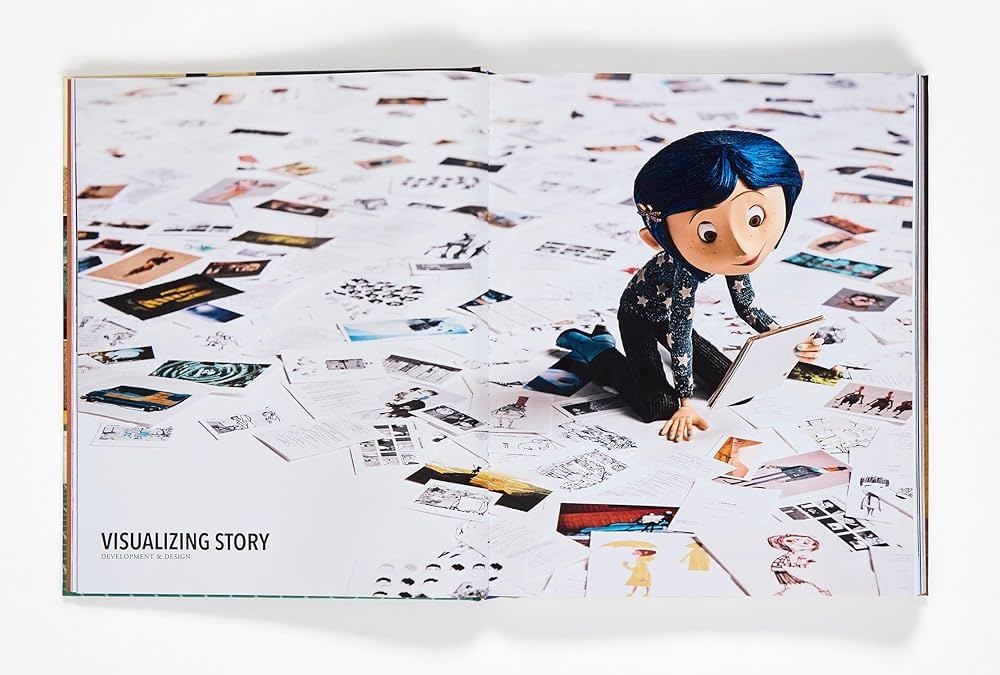
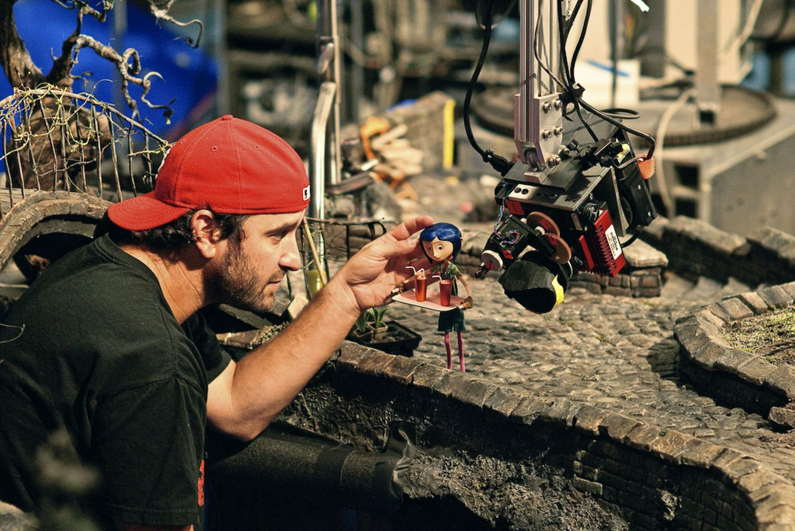
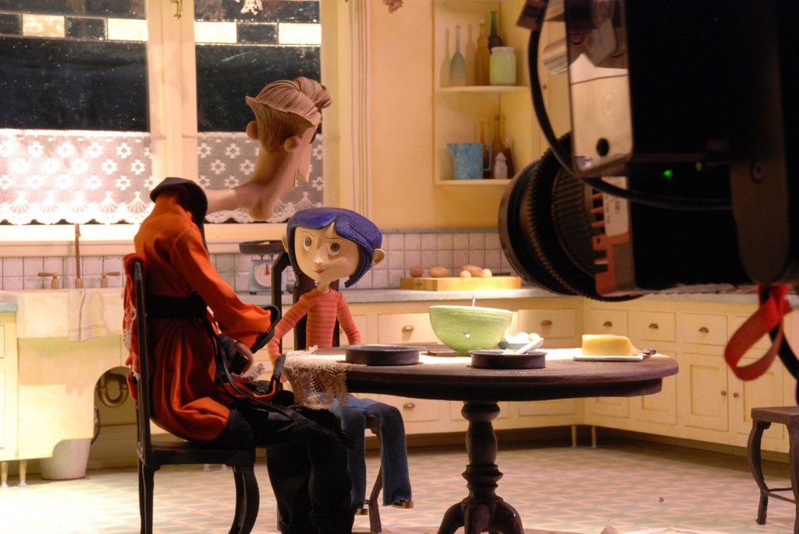

O stop-motion é uma técnica de animação onde objetos físicos são manipulados quadro a quadro. Para Coraline, foram criados mais de 60 cenários e 200 bonecos articulados. Cada segundo de filme exigia 24 poses diferentes, o que tornava o processo extremamente lento: um animador levava uma semana para produzir apenas 4 segundos de cena.
Henry Selick é um renomado diretor de animação americano, conhecido por dominar a técnica de stop-motion. Antes de Coraline, ele dirigiu O Estranho Mundo de Jack (1993) e James e o Pêssego Gigante (1996). Selick é conhecido por seu estilo visual único e pela capacidade de criar mundos fantásticos e sombrios através da animação frame a frame.


Bastidores de gravação e os bonecos originais da animação